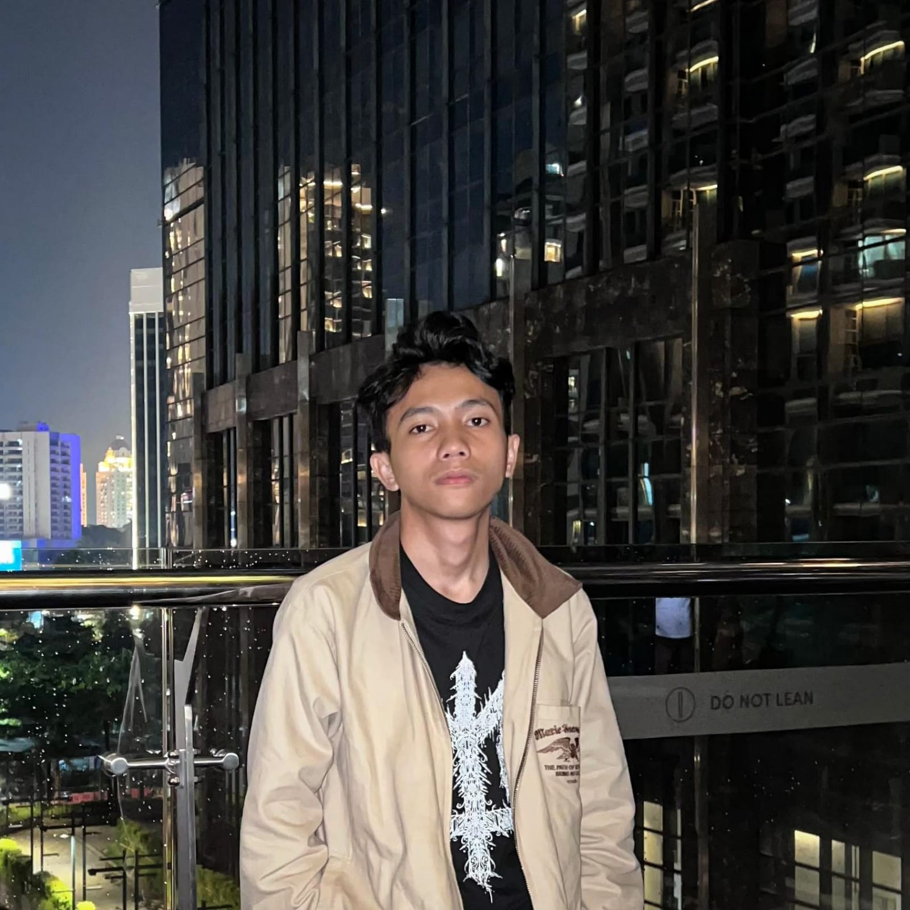

Muhammad Husein Danur Wendo
Mahasiswa IT | Junior Programmer | Content Creator
Contact Me
Contact Me
Saya adalah seorang mahasiswa aktif di politeknik negeri sriwijaya jurusan manajemen informatika, saya memiliki ketertarikan di bidang IT, saya memiliki berbagai kemampuan dasar dalam dunia IT, dimulai dari pemrograman web, UI/UX Desain, serta editing foto & video
Politeknik Negeri Sriwijaya
2021 - Sekarang
Sintak Polsri
Tahun 2022
Infinite Learning
Tahun 2024